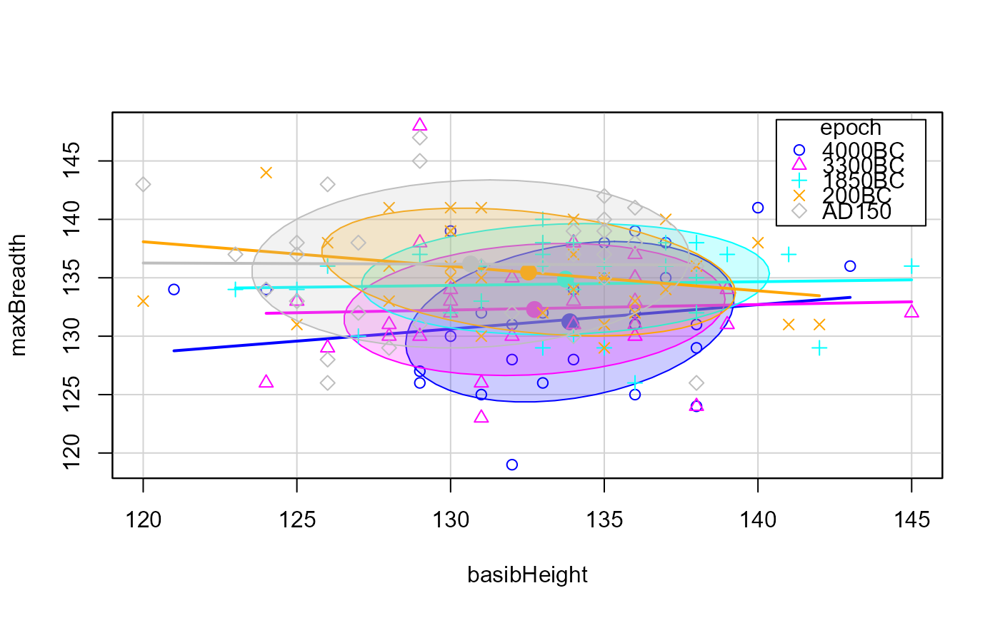
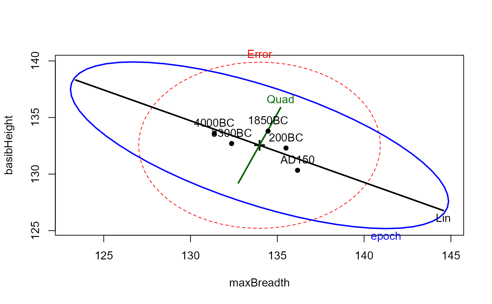
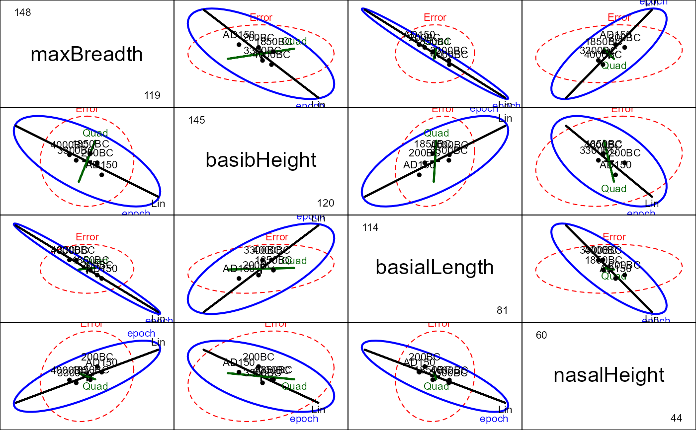

Skulls.RdMeasurements made on Egyptian skulls from five epochs.
data("Skulls")A data frame with 150 observations on the following 5 variables.
epochthe epoch the skull as assigned to,
an ordered factor with levels c4000BC c3300BC,
c1850BC, c200BC, and cAD150,
where the years are only given approximately, of
course.
mbmaximal breadth of the skull.
bhbasibregmatic height of the skull.
blbasialiveolar length of the skull.
nhnasal height of the skull.
The epochs correspond to the following periods of Egyptian history:
the early predynastic period (circa 4000 BC);
the late predynastic period (circa 3300 BC);
the 12th and 13th dynasties (circa 1850 BC);
the Ptolemiac period (circa 200 BC);
the Roman period (circa 150 AD).
The question is whether the measurements change over time. Non-constant measurements of the skulls over time would indicate interbreeding with immigrant populations.
Note that using polynomial contrasts for epoch essentially treats
the time points as equally spaced.
D. J. Hand, F. Daly, A. D. Lunn, K. J. McConway and E. Ostrowski (1994). A Handbook of Small Datasets, Chapman and Hall/CRC, London.
Thomson, A. and Randall-Maciver, R. (1905) Ancient Races of the Thebaid, Oxford: Oxford University Press.
Hand, D. J., F. Daly, A. D. Lunn, K. J. McConway and E. Ostrowski (1994). A Handbook of Small Datasets, Chapman and Hall/CRC, London.
data(Skulls)
library(car) # for Anova
# make shorter labels for epochs
Skulls$epoch <- factor(Skulls$epoch, labels=sub("c","",levels(Skulls$epoch)))
# longer variable labels
vlab <- c("maxBreadth", "basibHeight", "basialLength", "nasalHeight")
# fit manova model
sk.mod <- lm(cbind(mb, bh, bl, nh) ~ epoch, data=Skulls)
Anova(sk.mod)
#>
#> Type II MANOVA Tests: Pillai test statistic
#> Df test stat approx F num Df den Df Pr(>F)
#> epoch 4 0.35331 3.512 16 580 4.675e-06 ***
#> ---
#> Signif. codes: 0 '***' 0.001 '**' 0.01 '*' 0.05 '.' 0.1 ' ' 1
summary(Anova(sk.mod))
#>
#> Type II MANOVA Tests:
#>
#> Sum of squares and products for error:
#> mb bh bl nh
#> mb 3061.066667 5.333333 11.46667 291.3000
#> bh 5.333333 3405.266667 754.00000 412.5333
#> bl 11.466667 754.000000 3505.96667 164.3333
#> nh 291.300000 412.533333 164.33333 1472.1333
#>
#> ------------------------------------------
#>
#> Term: epoch
#>
#> Sum of squares and products for the hypothesis:
#> mb bh bl nh
#> mb 502.8267 -228.14667 -626.6267 135.43333
#> bh -228.1467 229.90667 292.2800 -66.06667
#> bl -626.6267 292.28000 803.2933 -180.73333
#> nh 135.4333 -66.06667 -180.7333 61.20000
#>
#> Multivariate Tests: epoch
#> Df test stat approx F num Df den Df Pr(>F)
#> Pillai 4 0.3533056 3.512037 16 580.0000 4.6753e-06 ***
#> Wilks 4 0.6635858 3.900928 16 434.4548 7.0102e-07 ***
#> Hotelling-Lawley 4 0.4818191 4.230974 16 562.0000 8.2782e-08 ***
#> Roy 4 0.4250954 15.409707 4 145.0000 1.5883e-10 ***
#> ---
#> Signif. codes: 0 '***' 0.001 '**' 0.01 '*' 0.05 '.' 0.1 ' ' 1
# test trends over epochs
print(linearHypothesis(sk.mod, "epoch.L"), SSP=FALSE) # linear component
#>
#> Multivariate Tests:
#> Df test stat approx F num Df den Df Pr(>F)
#> Pillai 1 0.2913791 14.59731 4 142 5.1953e-10 ***
#> Wilks 1 0.7086209 14.59731 4 142 5.1953e-10 ***
#> Hotelling-Lawley 1 0.4111918 14.59731 4 142 5.1953e-10 ***
#> Roy 1 0.4111918 14.59731 4 142 5.1953e-10 ***
#> ---
#> Signif. codes: 0 '***' 0.001 '**' 0.01 '*' 0.05 '.' 0.1 ' ' 1
print(linearHypothesis(sk.mod, "epoch.Q"), SSP=FALSE) # quadratic component
#>
#> Multivariate Tests:
#> Df test stat approx F num Df den Df Pr(>F)
#> Pillai 1 0.0183468 0.6634844 4 142 0.61837
#> Wilks 1 0.9816532 0.6634844 4 142 0.61837
#> Hotelling-Lawley 1 0.0186897 0.6634844 4 142 0.61837
#> Roy 1 0.0186897 0.6634844 4 142 0.61837
# typical scatterplots are not very informative
scatterplot(mb ~ bh|epoch, data=Skulls,
ellipse = list(levels=0.68),
smooth=FALSE,
legend = list(coords="topright"),
xlab=vlab[2], ylab=vlab[1])

scatterplot(mb ~ bl|epoch, data=Skulls,
ellipse = list(levels=0.68),
smooth=FALSE,
legend = list(coords="topright"),
xlab=vlab[3], ylab=vlab[1])
# HE plots
heplot(sk.mod,
hypotheses=list(Lin="epoch.L", Quad="epoch.Q"),
xlab=vlab[1], ylab=vlab[2])

pairs(sk.mod,
hypotheses=list(Lin="epoch.L", Quad="epoch.Q"),
var.labels=vlab)

# 3D plot shows that nearly all of hypothesis variation is linear!
if (FALSE) {
heplot3d(sk.mod, hypotheses=list(Lin="epoch.L", Quad="epoch.Q"), col=c("pink", "blue"))
# view in canonical space
if (require(candisc)) {
sk.can <- candisc(sk.mod)
sk.can
heplot(sk.can)
heplot3d(sk.can)
}
}